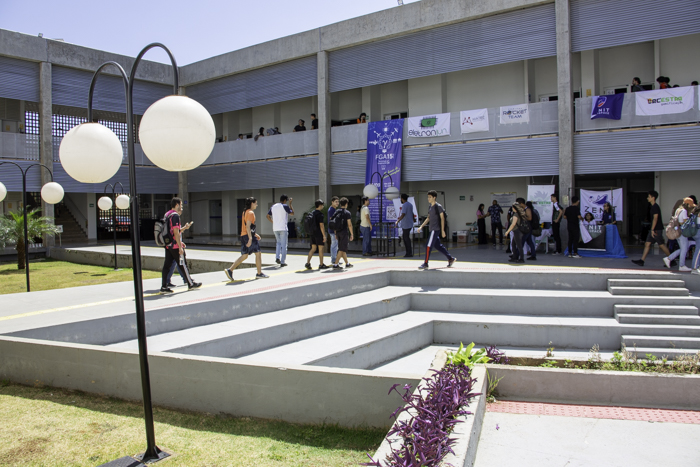

Sobre Nós
Apresentação do Grupo Somos um grupo de estudantes da Faculdade do Gama da Universidade de Brasília (FGA-UnB), atualmente cursando a disciplina de Métodos de Desenvolvimento de Software (MDS). Durante este semestre, desenvolvemos um projeto focado em transparência pública e análise de dados.
Nosso projeto consiste em um site que coleta dados das secretarias do governo do Distrito Federal e os apresenta de forma clara e acessível por meio de gráficos interativos. O objetivo é facilitar a compreensão dos maiores gastos governamentais, permitindo que qualquer pessoa possa visualizar e interpretar esses dados de maneira simples e intuitiva.
A Universidade de Brasília é uma instituição de ensino superior pública brasileira localizada em Brasília, no Distrito Federal, sendo uma das maiores instituições de ensino superior da região Centro-Oeste e uma das mais importantes do país.
Para conhecer mais sobre a nossa universidade, clique aqui.
